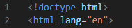
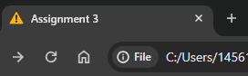
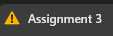

HTML Guide
Common HTML tags outside <body>
| <head> Tags | Definition | Examples (If Applicable) |
|---|---|---|
| <!doctype html> | <!doctype html> is a declaration that tells the web browser what version of HTML your document is written in. |  <!doctype html> is the very first line of this webpage! |
| <html lang="en"> | This line sets the language for the entire page, which helps other websites like Google Translate know the page's default language. | If you where to look into this page's code the default language is set to "en" which is short for English. |
| <meta charset="UTF-8"> | This tag is used to indicate the web page's character encoding. In order to see the correct content, this tag's function is used to let the browser know what character encoding is used in your document. | If you looked into this webpage's code you would find this exact tag located in the 5th line. |
| <title> and </title> | This tag gives the tab in which your webpage is open its title. |  If you look at the tab in which this page is open, you will see that the page's title is "Assignment 3". |
| <style> and </style> | These tags define a section within the document in which the Internal CSS is located. | These lines would set the page's background color to black. <style> body { background-color: black; } </style> |
| <link rel="css" href="file.css"> | These tags point to an extrenal CSS file that can adjust the way your document looks without having to incorporate CSS into the main document itself which may reduce complexity and improve organisation. | This page and all others used on this website use a common CSS stylesheet to describe the way they look, in this case it applies all of the necessary information to create the navigation bar, colors and background. |
| <link rel="icon" type="image/x-icon" href="icon.png"> | This tag can be used to add a Favicon to your webpage, which is basically an image on the browser's tab that can add a bit of personality or recognition to the page. |  This webpage has its own favicon, and it's a small .png warning sign that can be found next to the title. |